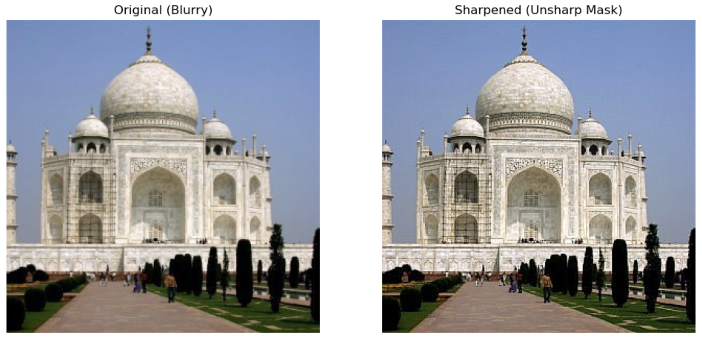
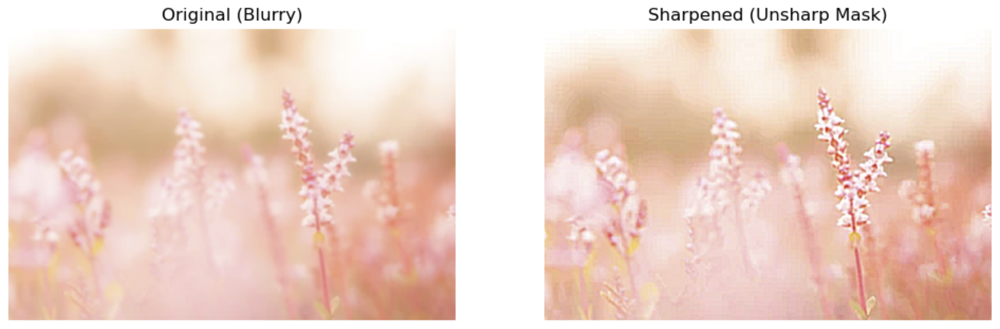
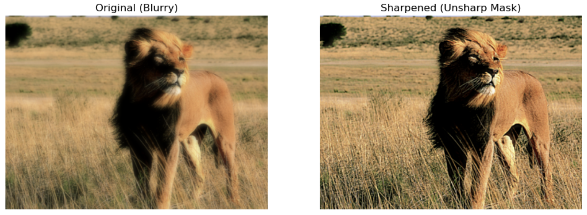
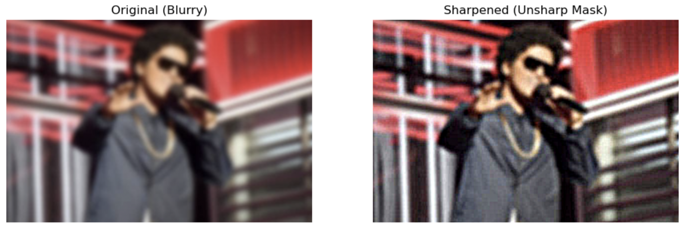
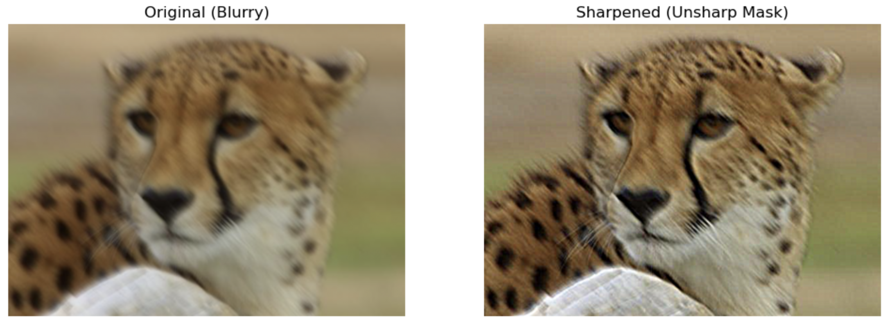
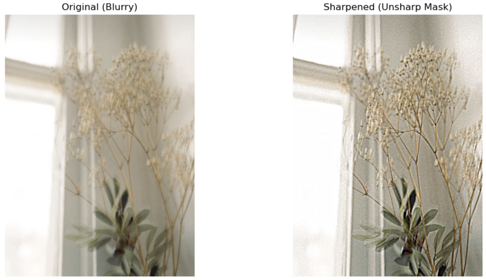
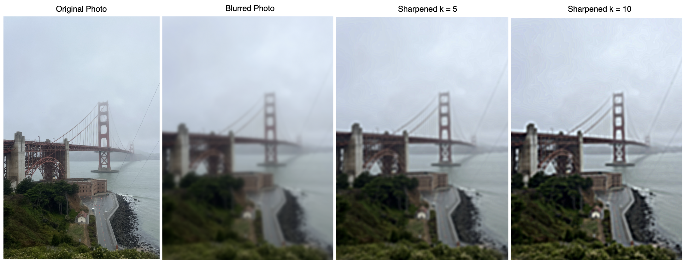

Part 2: Fun with Frequencies!
Part 2.1: Image "Sharpening"
This section explores image sharpening by enhancing high-frequency details using unsharp masking.
- Apply a Gaussian filter to extract the low-frequency components.
- Subtract the blurred image from the original to isolate the high-frequency details.
- Add these high frequencies back to enhance edges—this is the core of unsharp masking.
- Demonstrate the effect on several images, including sharpening a deliberately blurred image.
- Compare the original and sharpened images to assess the improvement in clarity and detail.
Taj Mahal Sharpened

Flower Sharpened

Lion Sharpened

Bruno Mars Sharpened

Cheetah Sharpened

Decoration Sharpened

Evaluation: let's pick a sharp image, blur it and then try to sharpen it again. Here, k is the scaling factor that controls the strength of the sharpening. A higher k increases edge enhancement, while a lower k produces a subtler effect.
Isharpened = Ioriginal + k · (Ioriginal - Iblurred)

Sharpening Evaluation on SF photo
Observation: applying unsharp masking after Gaussian blur improves clarity, but the original image was not restored completely.
The sharpened image is visually clearer than the blurred one, but some textures and exact pixel values are not identical.
There could be several reasons for this:
- Smoothing loses information: Gaussian blur averages pixel values, attenuating fine details and high-frequency components, which cannot be fully recovered.
- Sharpening is approximate: Unsharp masking enhances the high frequencies it extracts, but cannot perfectly reconstruct the original image.
- Practical limitations: Rounding, clipping, and frequency loss mean the sharpened image differs slightly from the original, even if the gaussian filter size and sigma are the same.
Part 2.2: Hybrid Images
The goal of this section is to create
hybrid images following the approach described in the SIGGRAPH 2006
paper
by Oliva, Torralba, and Schyns. Hybrid images are special static images that appear differently depending on how far away you view them.
The key idea is: high-frequency details dominate perception up close, while at a distance, only the low-frequency
(smooth) components are visible. By blending the high-frequency part of one image with the low-frequency part of another, we can
produce a single image that conveys different interpretations depending on viewing distance.
Frequency analysis
Part 2.3: Gaussian and Laplacian Stacks
Gaussian and Laplacian Stack on Avatar.
This is a Gaussian and Laplacian Stack on a photo of mona lisa and buildings.
This is a Gaussian and Laplacian Stack used for blending an orange and apple a.k.a oraple!
Multiresolution Blending
Blending Ironman with Tony Stark
Gaussian and Laplacian Stack
Blending the Spiderman
Gaussian and Laplacian Stack
Blending Door and Universe
Blending Billie Eilish and Ocean - her song Ocean Eyes!
Blending Eilie Tower and Starry Night
Gaussian and Laplacian Stack